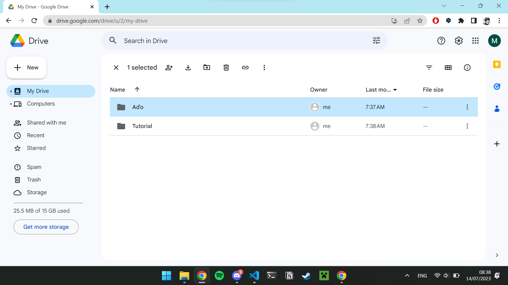
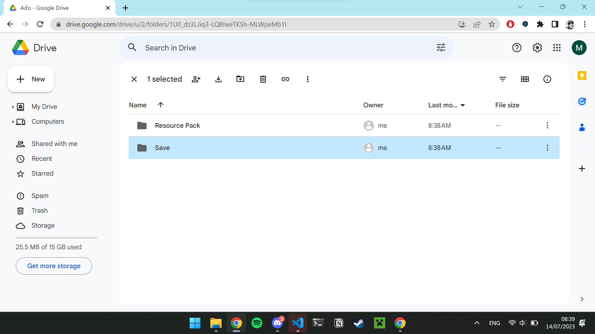
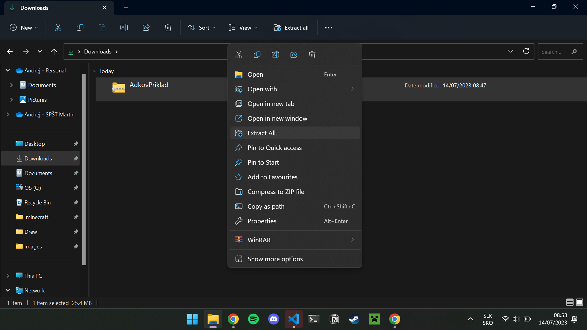
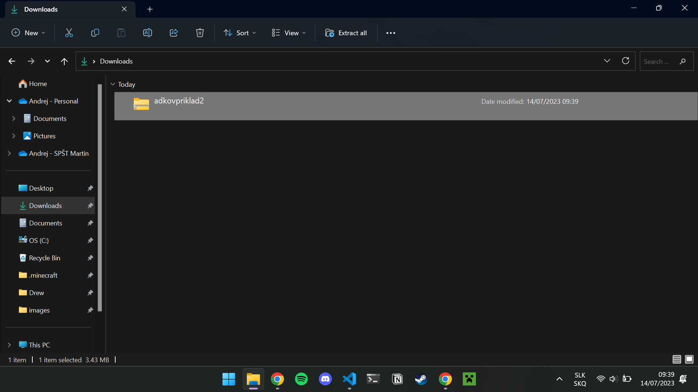
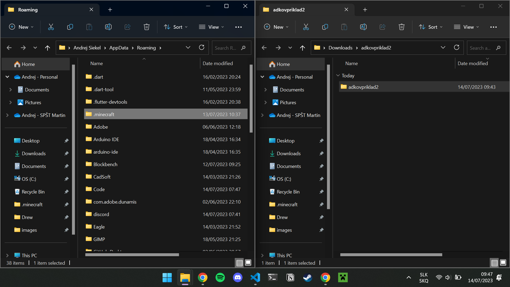
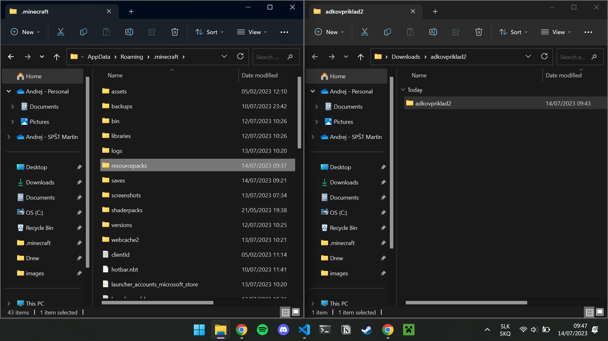
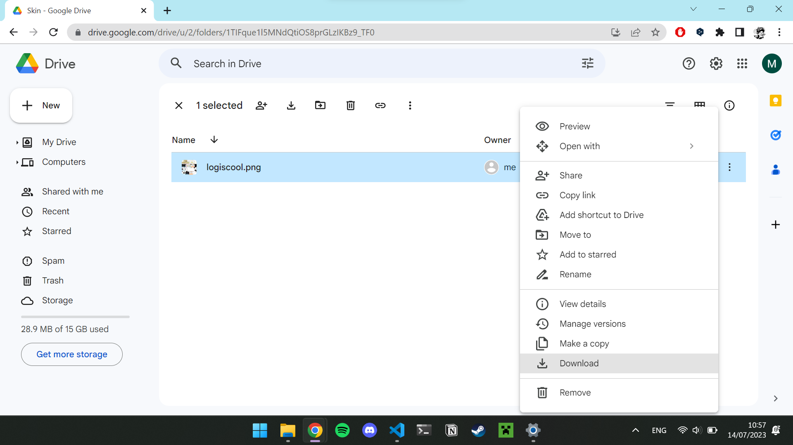
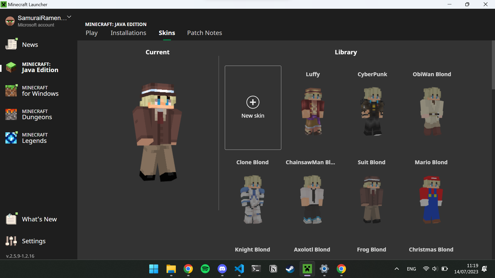
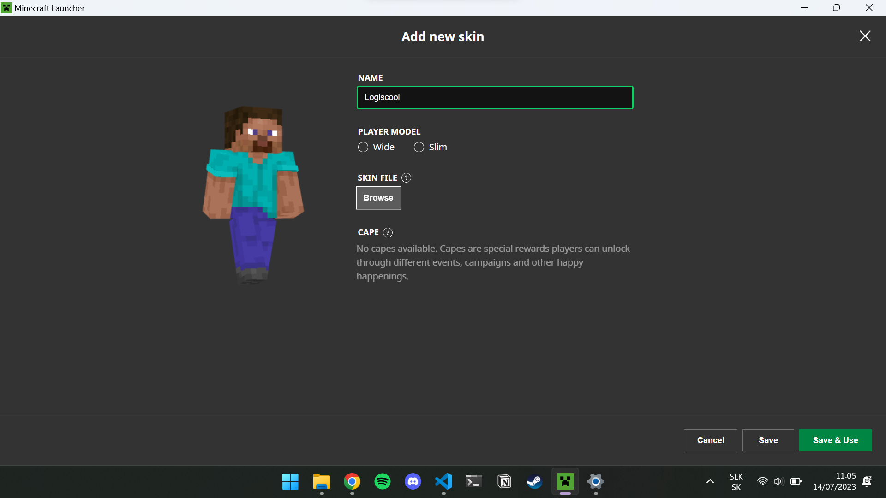

0. Prihlasovanie do Google Drive
- Začneme tým, že otvoríme váš internetový prehliadač.
- Prihláste sa na učet Google s prihlasovacími údajmi. Mail - designprace@gmail.com Heslo - DesignPrace123
- Otvorte Google Drive
1. Sťahovanie a Kopírovanie Minecraft Sveta
Začneme tým, že si každý nájde priečinok so svojim menom.
Následne každý vo svojom priečinku otvorí pričinok s názvom Save.
Vo svojom priečinku Save každý stiahne .zip súbor.

Po stiahnutí si každý otvorí priečinok Stiahnuté Súbory.

Na stiahnutý súbor klikneme pravým tlačítkom na myši a zvolíme možnosť extrahovať všetko... . Následne v pop up okne zvolíme možnosť extrahovať.

Následne by sa nám malo otvoriť okno so zložkou s názvom nášeho sveta.

Toto okno si necháme otvorené. Pravým tlačítkom na myši klikneme na windows štart tlačidlo a zvolíme možnosť spustiť.

Do okna, ktoré sa otvorilo napíšeme %appdata%.

V okne, ktoré sa otvorilo nájdeme priečinok .minecraft a otvoríme ho.

Po otvorení nájdeme priečinok saves a otvoríme ho.

Ak sme všetko urobili správne, mali by sme mať dve okná - saves a náš svet.

A nakoniec len presunieme náš svet zo svojho okna do okna saves.

2. Sťahovanie a Kopírovanie Reasource Packu
Znova si nájdeme priečinok so svojím menom a otvoríme ho.
Tentokrát zvolíme priečinok Reasource Pack a otvoríme ho.

Vo svojom priečinku Reasource Pack si každý stiahne .zip súbor.

Po stiahnutí si každý znova otvorí priečinok Stiahnuté Súbory.
Na stiahnutý súbor znova klikneme pravým tlačítkom na myši a zvolíme možnosť extrahovať všetko... . Následne v pop up okne zvolíme možnosť extrahovať.


Následne by sa nám malo otvoriť okno so zložkou s názvom našeho Reasource Packu.

Toto okno si necháme otvorené. Pravým tlačítkom na myši klikneme na windows štart tlačidlo a zvolíme možnosť spustiť.

Do okna, ktoré sa otvorilo napíšeme %appdata%.

V okne, ktoré sa otvorilo nájdeme priečinok .minecraft a otvoríme ho.
Po otvorení nájdeme priečinok reasourcepacks a otvoríme ho.
Ak sme všetko urobili správne, mali by sme mať dve okná - reasourcepacks a náš reasourcepack.

A nakoniec len presunieme náš reasourcepack zo svojho okna do okna reasourcepacks.

3. Sťahovanie a Pridanie Skinu do Minecraft Launcheru
Znova si nájdeme priečinok so svojím menom a otvoríme ho.
Následne každý vo svojom priečinku otvorí pričinok s názvom Skin.

Vo svojom priečinku Skin si každý stiahne .png súbor.
Po stiahnutí si každý otvorte Minecraft Launcher.

Následne sa prekliknite do Skins tabu.

Kliknite na tlačidlo New Skin.
Pomenujte si ho a Kliknite na tlačidlo browse.
Prekliknite sa do priečinku stiahnuté súbory a vyberte obrázok, ktorý ste stiahli.

Stlačte Save and Use.

Hotovo!